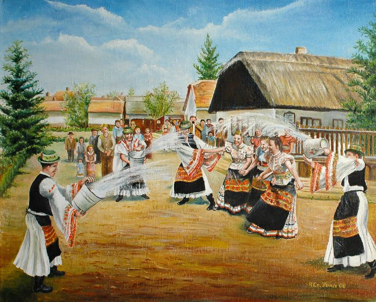

A húsvét a kereszténység legnagyobb ünnepe, a Krisztus-központú kalendárium központi főünnepe. Az Újszövetség szerint Jézus – pénteki keresztre feszítése után – a harmadik napon, vasárnap feltámadt. Kereszthalálával nem szabadította meg a világot a szenvedéstől, de megváltotta minden ember bűnét, feltámadásával pedig győzelmet aratott a halál felett. A valláson kívül is a tavaszvárás, a tavasz eljövetelének ünnepe is, amelyet március vagy április hónapban (a Hold állásának megfelelően) tartanak. A húsvétnak megfeleltethető az időben korábban kialakult zsidó vallási ünnep, a szabadság ünnepének (hág háhérut) is nevezik. A húsvét a pészahhal ritkán esik egybe, mivel a Hold járása szerinti naptár és a két változó ünnep számításától függ. A húsvét egybeesik a tavaszi nap-éj egyenlőség idején tartott termékenységi ünnepekkel is, amelyek eleme a feltámadás, az újjászületés. Az ünnep napjainkban sokak számára a tavasz beköszöntének ünnepe, amely vallástalan tartalommal, a szabadban töltött szórakozást jelenti, a húsvéti nyúl és a húsvéti tojás szimbólumaival.
